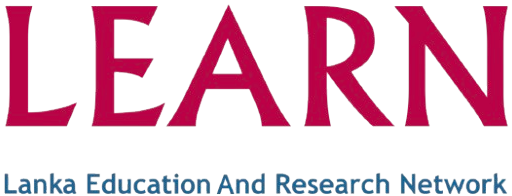
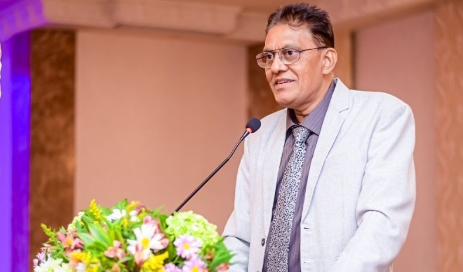
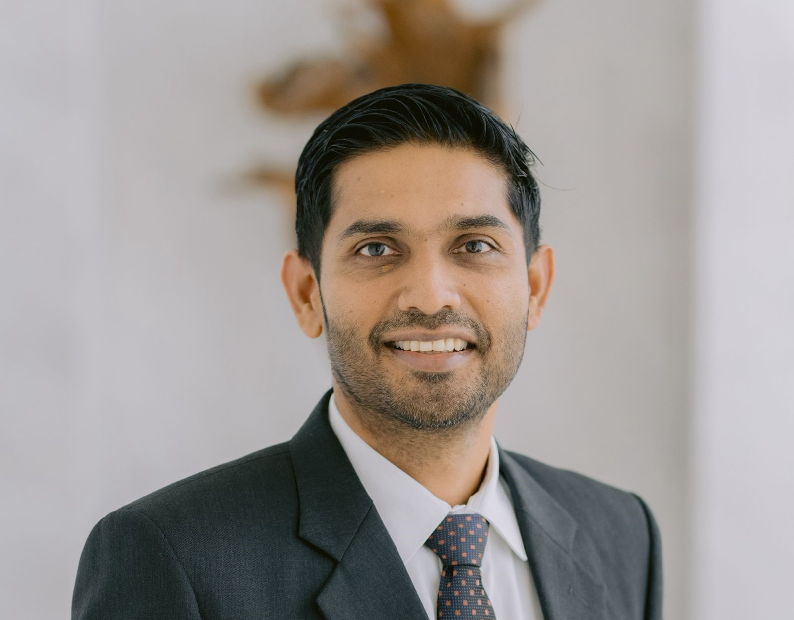
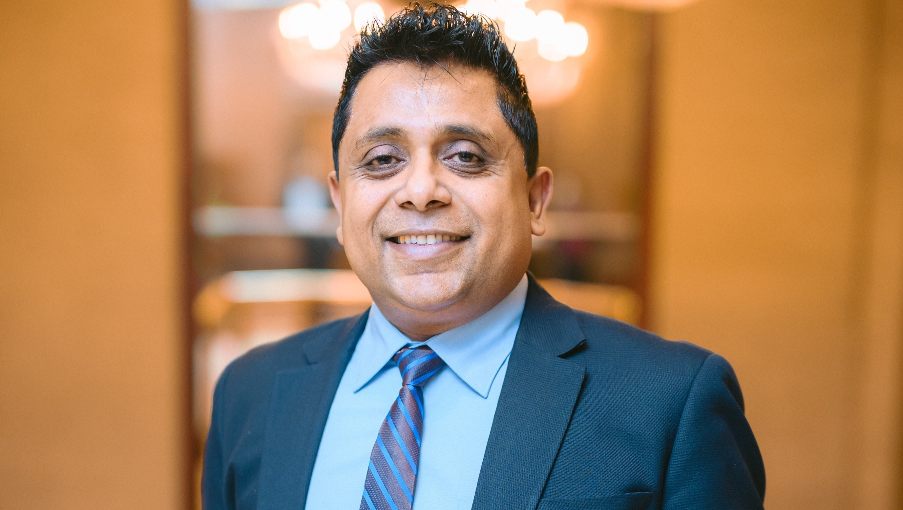

Partner Organizations
Collaborating to deliver exceptional educational experiences across Asia and beyond

LEARN

(Lanka Education And Research Network)
LEARN is Sri Lanka's National Research and Education Network (NREN), established in 1989 to connect the country's academic and research institutions. As an Internet Service Provider dedicated to the education and research sector, LEARN offers high-speed backbone networks, provides dedicated technical support tailored to research projects, and fosters collaboration among universities and R&D institutions.
Vision
To be a world-class Research and Education Network (REN) in the region, catering to the connection, communication, and collaboration needs of Sri Lanka's research and education community, accelerating economic and social development.
Mission
Equity for all: Ensuring fair access to advanced network infrastructure for all stakeholders.
More for less: Offering innovative, affordable services to meet research and education needs, promoting fairness.
Reimagining Research and Education: Facilitating global connectivity for continuous advancement in learning and innovation.
Governance
The Board of Directors (BoD) of LEARN comprises seventeen members representing each full-member institution. The BoD is chaired by the University Grants Commission representative, with directors appointed annually by their respective institutions.

AVPN

(Asian Venture Philanthropy Network)
AVPN is Asia's leading social investment network and ecosystem builder, dedicated to moving capital towards impact across the region. It helps funders and organisations align grants, debt, and equity for greater social and environmental outcomes.
Mission
To be Asia's leading ecosystem builder that channels financial, human, and intellectual capital toward impact — enhancing the effectiveness and collaboration of the social investment community.
Core Values
- Trust & Integrity: Building relationships on openness and accountability.
- Transformative & Innovative: Encouraging creativity to drive meaningful change.
- Diverse & Inclusive: Empowering voices from all sectors and backgrounds.
- Fun & Optimistic: Fostering positivity in the pursuit of impact.
Our Story
Founded in 2011 by Doug Miller, following the success of the European Venture Philanthropy Association (EVPA), AVPN was created to connect and empower Asia's diverse social investors. It has since grown into a network of over 700 members spanning philanthropy, impact investing, and corporate sectors.
Message from Leadership

As Chairman of LEARN, I see the AI4All AVPN project as a strategic step toward national readiness. This initiative builds the skills and confidence required to align with Sri Lanka’s National AI Strategy while strengthening our capacity to innovate and compete globally.

As CEO of LEARN, I see the AI4All AVPN project not merely as training but as a national movement toward digital equity and empowerment. This initiative helps ensure Sri Lanka becomes a confident pioneer of its digital future.

As CTO of LEARN, I believe this project is a turning point for our nation. By connecting technology, opportunity, and education, we help more communities step confidently into the future of AI.
LEARN
(Lanka Education and Research Network)
LEARN is Sri Lanka's National Research and Education Network (NREN), established in 1989 to connect the country's academic and research institutions. It provides high-speed backbone networks, dedicated research connectivity, and tailored technical support, empowering collaboration and innovation across the nation's education and research communities.
Mission
To provide equitable, innovative, and high-performance networking solutions for the Sri Lankan research and education community — ensuring fair access, promoting collaboration, and driving social and economic development through digital connectivity.
Vision
To be a world-class Research and Education Network (REN) in the region, catering to the connection, communication, and collaboration needs of the academic and research community in Sri Lanka.
AVPN
(Asian Venture Philanthropy Network)
AVPN is Asia's leading ecosystem builder for social investment, uniting over 700 members across 43 markets. It works to move financial, human, and intellectual capital toward impactful social change, helping funders combine grants, debt, and equity for deeper outcomes.
Mission
To build a trusted and collaborative ecosystem that directs capital toward impact — enabling social investors across Asia to connect, learn, and lead meaningful change.
Core Values
- Trust & Integrity: Building open, fair, and accountable relationships.
- Transformative & Innovative: Driving creative and sustainable solutions.
- Diverse & Inclusive: Welcoming all perspectives to enrich collective progress.
- Fun & Optimistic: Encouraging a positive, forward-looking community.
Our Story
Founded in 2011 by Doug Miller, following the success of the European Venture Philanthropy Association, AVPN connects diverse funders and organisations across Asia to mobilise capital for impact. Today, it stands as Asia's #1 social investment network and the only platform serving the full spectrum of social investors in the region.